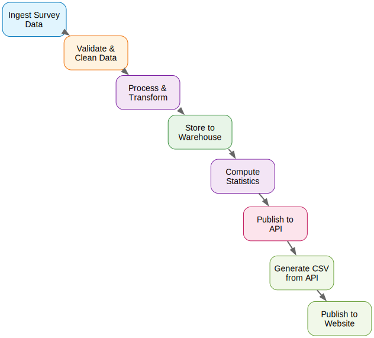

National statistics matter: they have a direct bearing on everything from government targets, to funding formulae, to the focus of the media, to the UK’s debt. But there have been many high-profile errors in the nation’s numbers recently, and that’s a cause for concern. Furthermore, the recent Devereux and Public Administration and Constitutional Affairs Committee (PACAC) reviews have found deep, systemic flaws in the UK’s current approach.
I’m a Royal Statistical Society William Guy Lecturer for 2025-2026, and my topic is “Economic statistics and stupidly smart AI.” With my William Guy Lectureship hat on, I’ve been thinking a lot about how innovation could help with the production of statistics.
If we were to start from scratch, what would a statistical institute designed for the world of today—and tomorrow—look like? How would you rebuild for the era of AI and data science and cloud, take on board the best practices in management, and ensure the right talent was in place to deliver for the nation?
This blog post is my attempt at answering these questions and giving a rough blueprint for a different model for producing statistics. Please note that these are very much my personal views.
Introduction
Background
National statistics are critical infrastructure—essential for decisions that will determine the success of the country. However, the current means of their production has been under pressure. To name a few, there have been recent high-profile errors in trade, productivity1, GDP, time use, innovation2, migration, census, health and labour market figures.
1 The materials accompanying the productivity revision said “the previous version suggested that the UK’s average output per hour worked growth rate was 5.0% during the coronavirus (COVID-19) period of 2020 and 2021. The corrected version shows that the UK’s average output per hour growth rate was -0.3% over this period…. the previous version suggested that the UK output per hour worked in 2021 (excluding Japan) had the fastest growth of the G7 countries. This has now been corrected to the second slowest. The previous version also suggested that in 2020 the UK had a fall of 12%, which is now corrected to a 1.2% increase.”
2 “…the value of expenditure on R&D performed by UK businesses according to ONS’ BERD survey were £15.0 billion, £15.6 billion, and £16.1 billion higher in 2018, 2019 and 2020 respectively than previously estimated.”
The media has noticed—here are some recent headlines:
- Why the UK’s official statistics can no longer be trusted, Daily Telegraph, 2025/05/21.
- Faulty data leaves Britain in the dark: The quality of ONS governance and critical statistics needs fixing, Financial Times, 2025/04/05.
- Troubled UK statistics agency warns of errors in its growth figures, The Guardian, 2025/03/21.
- The Office for National Statistics must change to fix its data problems, Institute for Government, 2025/03/12.
It is not all bleak: there have been incredible developments in UK statistics in recent years. The Covid Infection Survey was a triumph. Though it’s early days, card data shows promise. The use of scanner data for inflation is perhaps the strongest contemporary example.3 Scanner data are created as consumers purchase goods at a supermarket checkout (or online), and they give the product name, volume, and price paid. This is a giant leap compared to field agents travelling around supermarkets with clipboards, who were able to only record the price, and then only for a much smaller number of products. Scanner data make consumer price inflation (CPI) more accurate, give more information on price changes across the economy, and allow more analysis of what products are driving price rises. The adoption of scanner data was an extremely significant step forward for how inflation is measured in the UK.4
3 Though the UK wasn’t the first: others who have adopted scanner data include the Netherlands (2002), Norway (2005), Switzerland (2008), Sweden (2012), Belgium (2015), Denmark (2016), Iceland (2016), Luxembourg and Italy (2018).
4 This particular example shows that, with the right conditions, substantial improvements in statistics are possible.
It’s also fair to say that there have been headwinds in producing good statistics too: one enormous challenge stems from the long-running issue of declining response rates that has afflicted most national statistical agencies (Stedman et al. 2019).
However, many other issues have come from copy-and-paste errors or the use of spreadsheets, and could have been avoided. The two reviews from 2025, Devereux and PACAC, follow many others5 and one recurring theme is that the problems with UK statistics go beyond declining response rates.
5 Turnbull-King 1999, Allsopp 2004, Smith 2006, Smith 2014, Johnson 2015, Bean 2016, and Lievesley 2024.
So I thought it would be fun to imagine what a greenfield design for producing the best quality statistics possible would look like.
Imagining better
Why is a better way of doing statistics easy to imagine? We just have much better tools across technology and organisational science to bring to bear on the production of quantitative outputs than we have ever had before, and they should give us huge optimism that there’s a different path here.
Data science, big data, AI, cloud services, better algorithms, faster hardware, innovations in the management of technical and data-heavy organisations; all could fundamentally change and improve how statistics are produced and delivered (Turrell 2025). Studies have suggested that in regular organisations, the use of data science and big data can improve productivity by as much as 7% (Brynjolfsson, Hitt, and Kim 2011; Müller, Fay, and vom Brocke 2018). That number should surely be higher for tasks that are solely about the collection, processing, and publication of data.
Also, the management of data-first organisations has been the subject of a great deal of improvement and innovation—with firms like Amazon, Google, GitLab, and more developing ways of working that are suited to the kinds of tasks that statistical production also requires: everything from asynchronous working, to a small and highly skilled workforce, to technical career paths, to “single-threaded” leadership. The management and organisational strategies that have been developed in these frontier firms are part of the reason for their success, and there is every reason to think that other data-centred organisations would benefit from trying them.
Let’s now look at some concrete ideas for what to do differently across technology and capital, people and skills, and management.
Technology and capital
Prof Bart van Ark, managing director of the Productivity Institute, asseses that around one-third of the UK’s productivity ‘puzzle’ is a result of low capital per worker. The UK’s capital per hour worked lags behind Italy and the Czech Republic (Allas and Zenghelis 2025). If you were redesigning the production of statistics from scratch, you’d want to ensure that top quality technology and capital were in place.
Use of AI
AI is just a tool, so I almost didn’t honour it with its own section. However, it’s where some of the most exciting developments could emerge. Here are a few ways it could help:
- detecting mistakes in survey responses. Machine learning and large language models could significantly increase the rate at which this kind of data error is caught.
- flagging outliers. (Similarly to above.)
- interview transcription—even when the language is not English!
- translation to official taxonomies from free text fields (Turrell et al. 2022; Soria 2025). This is currently a burdensome process with much manual labour, but large language models can be targeted to, as an example, turn respondents’ written job description into official Standard Occupational Classification categories.
- imputation of missing responses in early estimates. Machine learning excels at matrix completion, and that would be more sophisticated than what is commonly used today (eg ratio implementation.)
- conducting survey interviews. Yep, you read that right! See Geiecke and Jaravel (2024).
- computer vision can extract data from satellite imagery for, say, building starts: Statistics Canada and the US’ Census Bureau are both compiling more accurate, more timely statistics using satellite data (Erman et al. 2022)
- similarly, computer vision can be applied to street scenes to assess the cleanliness and desirability of high streets
- accessibility enhancement: AI can automatically generate alternative text for visual content, create audio descriptions, and translate content into multiple languages.
- natural language processing can assess news articles for the softer indicators of sentimentn that often lead harder indicators (Kalamara et al. 2022)
- making statistics more accessible to the general public. Large language model-based retrieval augmented generation is able to answer users’ questions based only on certified information, and can link back to its sources. This would allow for a fundamental shift in how people discover and consume statistics. It would also potentially reduce the number of ad hoc requests. My former colleague Andy Banks led a project demonstrating the principle already.
- help with coding via tools such as GitHub Copilot, Claude Code, and Gemini CLI.
- drafting articles that are simply summaries of data updates.
Computing and data infrastructure
Hardware based on Unix, which is well-suited to data and code, would be available to staff for local development. High performing hardware saves labour, so is cost effective, but it’s also necessary to run large language models and other AI locally—allowing you to quickly try out ideas. Recognising that people’s time is usually the biggest cost in an organisation, top-end laptops would be a no-brainer.
The new automated pipelines would be based on secure cloud services, capitalising on the falling cost, increasing functionality, and scalability of the cloud. These products have typical service level agreements of 99.9% uptime. As far as possible, the cloud infrastructure used would be service provider agnostic to prevent vendor lock-in and to keep costs competitive. The architecture and services used would follow the “infrastructure-as-code” principle, which means that it can be programmatically deployed, and easily re-deployed, including—at least in principle—via a different vendor. Terraform and related technologies will be used for this.
The data architecture used would be be a ‘data lakehouse’. This combines the ability to work with unstructured data and structured data in databases with a data catalogue and other metadata, including version histories, all of which is useful and goes beyond a simple database. Some options are Amazon Sagemaker Lakehouse, Google’s open lakehouse, and Databricks Lakehouse. For local development and prototyping, it’s possible to use DuckLake.
Code
The computer code used would of course be under version control, and subject to ongoing quality checks, some automatic (eg unit and integration tests.) Tools like SQLFluff and Ruff can flag and even auto-correct some problems in database queries and code respectively, while other tools such as pre-commit and panoptipy6 provide ways to flag potential issues to both developers and managers. Of course, this code would be under version control. There’s even a maximalist approach where the code to produce statistics is open source too, so that problems can be found more quickly by more eyeballs.
6 Full disclosure: I wrote this package! It’s still in beta, but you can get the gist already.
The code would mainly be Python and SQL, for many reasons.
Python’s dominance in data science reflects several compelling advantages that make it the natural choice for modern analytical work. The language benefits from vast popularity across multiple measures, creating substantial positive network externalities, eg rapid bug discovery, the ability of large language models to write it well, and the sheer volume of available free and open source packages that are on PyPI. Major conferences like NeurIPS and ICML predominantly feature Python-based research, as do machine learning competitions.
Python is widely taught and used. It’s taught in some UK and US high schools, both state and private, meaning that the future pipeline of talent is assured. In the professional sphere, data scientists in the private sector predominantly work in Python and SQL, with this share growing over time. Beyond the academy, firms that sponsor and support Python include Microsoft, Google, Meta, and Bloomberg. Even RStudio’s rebranding to ‘Posit’ reflects a strategic pivot toward Python support.
Cloud infrastructure considerations are increasingly crucial: services like Google Cloud Run and Azure Functions support Python natively.
Just as Python is dominant in the space of analytical code, SQL dominates in database languages. SQL complements Python perfectly, offering flexibility, simplicity compared to distributed databases, wide adoption, and impressive scalability (as demonstrated by Google BigQuery’s massive-scale SQL operations).
Using Python and SQL means being able to piggy-back on the wider innovations in these languages, and being able to attract staff for whom statistical production may not be their only ever job.
Automated data pipelines based on code and focused on quality
Data pipelines—from ingestion to prepared outputs—would be automated, with both automated and human checks throughout.
This would begin with data acquisition. Insofar as is possible, data could be programmatically read in from application programming interfaces (APIs) rather than sourced manually. This may not always be possible depending on the data source. But if the data are coming from, say, a survey, the information can still be acquired initially through digital means and validated at the very first stage. Surveys that are panels could be pre-populated with known answers to try and limit the fall off in responses due to “survey fatique.”

The progression of data through a pipeline would be run by the data orchestration tools that are fairly common in production grade data science applications. Data orchestration tools schedule, monitor, and catch errors or issues in the processing of data by computer code. Orchestration flows can be triggered on on a schedule or according to an event, for example if a new file lands in a folder. They ensure that data are transformed, cleaned, and delivered efficiently and accurately. Orchestration tools can handle large volumes of data, support various data formats and programming languages, and can make it easier for organisations to monitor their entire estate of processes. Some popular data orchestration tools include Apache Airflow (first generation) and Dagster and Prefect (both second generation, with more advanced features). All of these are free and open source. For hosting of orchestration pipelines, Google Cloud Composer and Amazon Managed Workflows for Airflow are both managed Airflow instances that can be configured using a dedicated API or using Terraform.
As data are passed around the workflows, they can be subject to checks that will raise a red flag should a problem be detected. “Type checking” would flag any issues with the format of the data. This can be achieved with data validation tools such as Great Expectations, Pandera, and (for unstructured data) Pydantic. Data validation and plausibility checks could look to see whether the data are consistent with historical and other contextual information too—this helps ensure that implausible values are caught early, including at the aggregate level.
Once data and pipelines are in the cloud and automated, it becomes possible to do data lineage tracking. This would allow one to understand how data change from landing, through processing and transformation, and to reports, applications, and statistics. Such lineage tracking can trace an error’s origin, highlight inconsistencies across processes, and show what the downstream consequences of an error might be at the start of a pipeline. Data lineage tracking also enables sensitivity analysis, so that producers can ask questions like, “What would the statistic look like if this or that data point were incorrect?” This gives a sense of whether the overall numbers are driven by one or two responses that, if incorrect, could make the final numbers misleading.
Any changes to critical production-of-stats code would be subject to review, and to tests that would show how the output statistic would change subject to the code change.
At the end of the pipeline, the single source of truth on the final output would be an API, and data available in the traditional way (ie where it could be downloaded manually from a webpage) would be built on top of that API—ensuring that these sources were consistent and that the statistics could be accessed programmatically by others. APIs are the bedrock of online services and are already provided by a wide range of public sector organisations such as Transport for London (TfL), the Federal Reserve Bank of St Louis’ statistical service FRED, the World Bank, and the OECD. They are powerful because they allow for integration of downstream services: analysts using the statistics could write their own automated pipelines that directly consume relevant data feeds and businesses could use the data in services they provide (much as CityMapper does with the TfL API.)
Internally, dashboards of KPIs of the quality of statistics and code, and the numbers of manual and programmatic downloads of statistics, and other relevant pipeline data would be produced and displayed as part of the process—more on that in the management section!
Skills and labour
Recognising how technology is changing the demands on workforces, and the high costs of co-ordination of lots of people, you’d probably want to go for a leaner, more highly skilled and better paid workforce than has hitherto been the case. Fewer, more expert staff can be more agile and make risk-reward trade-offs more succesfully.
Fundamentally, the production of statistics is a technocratic endeavour, and you would want a workforce that reflects this: you’d want them to be highly skilled in relevant technical subject areas; for example, data science, statistics, and economics. The level of knowledge that you would want to see staff demonstrate in these areas would be high—so high that, like those similarly technocratic institutions, central banks, you would want to have a dedicated career offering for people with PhDs in relevant topics and you would make space for them to do research on how to make the statistics better.
To ensure that the workforce did meet these criteria, and to reflect that the use of code, data, and AI would be foundational to the tasks, you might want to require technical staff (most staff) to pass a coding test in Python and SQL.
Inevitably, going for a highly skilled workforce would mean needing to offer high salaries too—though pay would not need to be as high as in the private sector because access to the best data in the country would be a strong draw for economists, data scientists, and statisticians alike, and public service is a great motivator for many. To ensure that the overall budget remained sensible, one would have to have a smaller workforce however.
Getting the right skills is the most important part of any endeavour, and where you site your statistical production should reflect this: it’s got to be where the people you want to work with are. Ideally, you would use a cost-benefit analysis of different locations and look at whether they could supply suitable labour at reasonable cost. A place with a thick labour market for highly educated graduates and post-graduates, but not too high a cost of living, is most likely to deliver this.
Once highly skilled labour is acquired, it would need to be cultivated and retained. Ongoing investment in human capital is all the more necessary in a world where AI means work is changing rapidly. Beyond that, there would need to be a compelling career offering for those who can bring value not just via managerial and organisational skills, but also via technical knowledge, ability to innovate, and professional leadership. Therefore, it would be essential to have technical career paths on offer. Technical career paths are common in frontier technology firms that require somewhat similar skills: Google has a complete parallel technical career ladder for roles up to and including Senior Vice President; Amazon, Meta, AirBnB, Uber, Apple, and Microsoft have similar pathways. This approach is not unprecedented in the public sector.
One advantage of having research skills would be to invigorate innovation. One (extremely imperfect) metric of innovation in statistics is how many research papers are published by national statistical organisations. As you can see in Figure 1, world-leading institutes like Statistics Netherlands and Statistics Canada fare well on this measure.
It is not just highly skilled technical workers that will be required: management and leadership must also be highly skilled in their crafts. It almost goes without saying that poor leadership and bad management practices can undermine any endeavour, no matter how good the rest of the people working on it may be. Therefore, as well as seeking highly skilled technical staff, it is important that senior leadership have vision, the pragmatism to deliver, and the ability to implement the best practices in management. Firms with better management practices have higher labour productivity; why should we expect the production of statistics to be any different? And the benefits are significant: moving from the median to the 75th percentile of the distribution of management practices scores increases productivity by 11%. On the topic of management practices…
Management practices, culture, and organisation
The best practices for culture, organisation, and management would need to be used to deliver the best possible statistics. Drawing from sources like Do managers matter? and the techniques implemented at Amazon and others, the following innovations would be used:
A culture of continuous improvement within existing teams. No hiving off improvement work to be done in a different department or team—innovation is everyone’s job! Those improvements can be encouraged, monitored, and celebrated through KPIs…
The use of Key Performance Indicators (KPIs) for tracking progress and for making key management decisions (eg around prioritisation.) These should be available through the whole organisation, and will help hold people to account for the statistics they are producing.
Small, highly autonomous teams7 responsible for elements within the vertically integrated product-structure. Small teams operating with high autonomy within guardrails can help tackle co-ordination costs, remove the need for wide consensus (which leads to inaction), and prevents the diffusion of accountability. It is also much more empowering, which is strongly linked to job satisfaction.
The use of targets that are stretching, tracked, and reviewed.
Strict, rapid, and effective performance management.
An organisational structure that reflects products and outputs rather than functional areas. This means that an entire production pipeline, from survey to final published statistics, will be owned by one area that can be held accountable for it. This is a contrast to having surveys in one department, technology in another, HR another, and statistics processing another. Functional models struggle to ensure aligned incentives. For example, if you have someone responsible for IT they are typically incentivised to minimise how much is spent on technology and to de-risk that technology as much as possible. However, another person who is responsible for processing statistics has quite different incentives: they want analysis to be done quickly (so prefer more expensive IT) and they are willing to take on some risk to get the job done. It can be hard for an organisation to solve this trade-off effectively, especially if these two people have reporting lines that only meet in the head of the organisation, who will have many other concerns on their plate. Instead, a product-oriented structure sees much of technology, HR, etc., embedded right next to the coal face.
Similarly, “single-threaded” leadership, which means a single person is ultimately responsible for getting a product out. This leader is incentivised to make the optimal trade-off on risk and spend versus delivery. There is clear accountability in this model. Single-threaded means that leaders have end-to-end accountability for outcomes, decision bottlenecks are removed, and everyone under that leader is aligned on the goal.
Kanban boards for management of work tasks, wherein everyone in the team knows what is happening, and a large number of routine updates are no longer necessary
Asynchronous working patterns, such as status updates being automatic rather than through meetings (as above.) Synchronous meetings would be reserved for bilaterals and low-latency collaboration on complex issues. Documentation would be used obsessively for code, processes, decisions, and actions (this also lowers initial onboarding costs.) In particular, the documentation and code that processes data in a part of the pipeline will sit together and automated checks will ensure that they do not diverge (a common practice in high end software development.)
Proposals to be discussed by committees in prose, not PowerPoint, in the form of notes with a page limit. Meetings would start with “silent time” so that everyone gets on the same page (literally) and can have a constructive discussion.
Decisions counter-signed by all, and the reason for the decision documented.
“working backwards” for new products
“disagree and commit”, to avoid consensus bias
a single source of truth for all information
7 Usually defined as those that can be fed with two pizzas.
Conclusion
Our current statistical infrastructure is creaking dangerously. Could this crisis present an opportunity? We now have the tools—AI, cloud computing, modern data science, and battle-tested management practices from the world’s most successful tech companies—to build anew.
Starting from scratch would mean putting technology first: automated pipelines running on secure cloud infrastructure, with AI catching errors that humans might miss, and APIs making statistics as accessible as checking the weather on your phone. It would mean talent over scale: a smaller, highly skilled workforce of data scientists, statisticians, and economists who can programme this technology to produce the best stats possible. And it would mean innovation in management: product-focused teams with single-threaded leadership, clear KPIs, and the management practices that have made Amazon successful but applied to the considerably more important task of measuring the economy and more.
Here’s what should keep us all awake at night: we could be making billion-pound decisions based on statistics produced with clipboard-and-Excel methods while the tools to do this properly are sitting right there, proven and ready to deploy. The question isn’t whether we can rebuild our statistical infrastructure for the modern age—the question is whether we will—and whether it can happen before the next crisis in the nation’s numbers hits the headlines.
The blueprint exists. The technology works. The management practices are proven. And we need statistics fit for the choices that will shape Britain’s future: because a decision based on the wrong data is like a house built on sand.